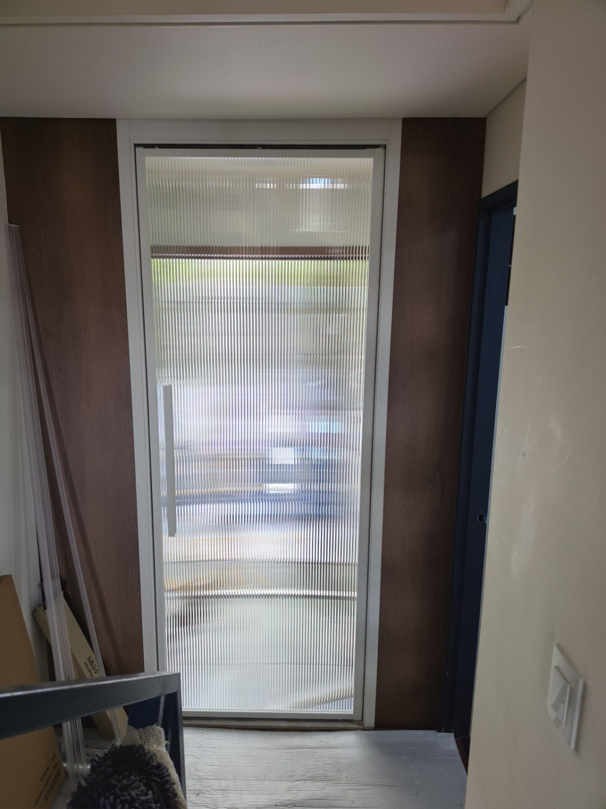
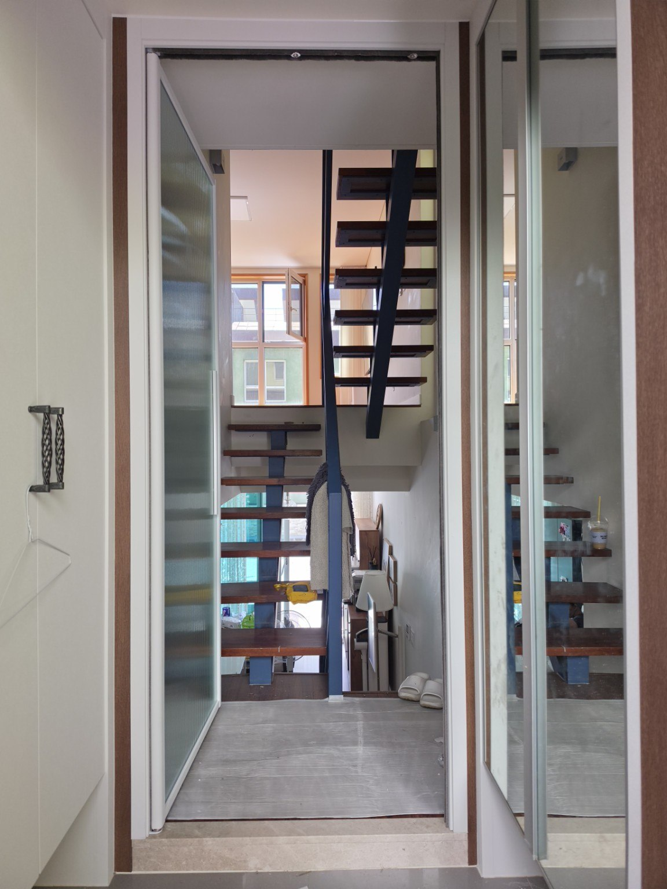
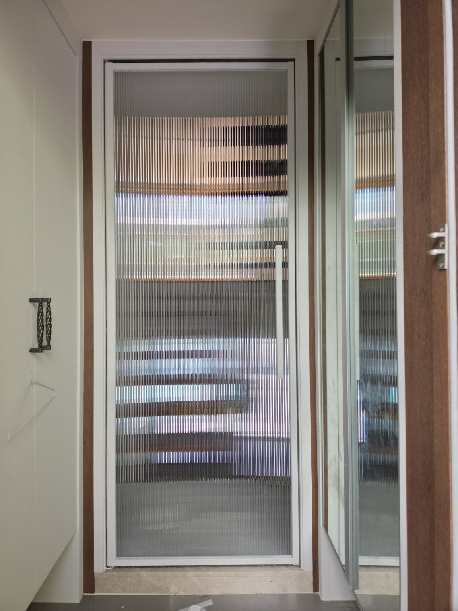
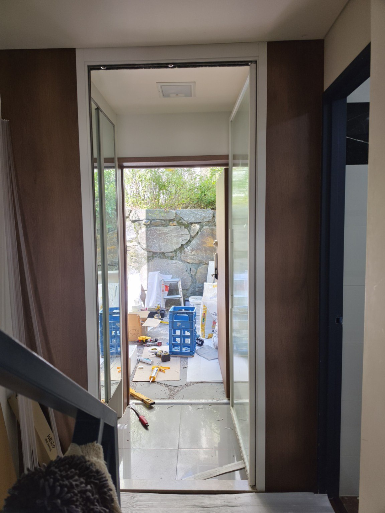

시공현장 경기도 광주시 수레실길 62-19 주택 1층
색상 영림 170번
유리 모루 세로결 강화유리
중문 형태 1짝 양방향 여닫이
색상 영림 170번
유리 모루 세로결 강화유리
중문 형태 1짝 양방향 여닫이
겨울철 난방 부담을 고려한 중문 시공
이번 현장은 겨울철 난방비 부담이 커 중문 설치를 결정한 주택입니다. 출입구와 실내 사이에 중문을 설치하면 문을 열고 닫을 때 외부의 찬 공기가 실내로 직접 들어오는 것을 줄이는 데 도움이 됩니다.
중문 설치 효과는 이렇게 기대할 수 있습니다.
출입구와 생활공간 사이에 한 번 더 공기층을 만들어 찬 공기의 직접 유입을 줄이고, 실내에서 데워진 공기가 출입구 쪽으로 빠르게 빠져나가는 것을 완화하는 데 도움을 줄 수 있습니다. 다만 실제 난방비 절감 정도는 주택의 단열 상태와 난방 방식, 출입 빈도에 따라 달라질 수 있습니다.
출입구와 생활공간 사이에 한 번 더 공기층을 만들어 찬 공기의 직접 유입을 줄이고, 실내에서 데워진 공기가 출입구 쪽으로 빠르게 빠져나가는 것을 완화하는 데 도움을 줄 수 있습니다. 다만 실제 난방비 절감 정도는 주택의 단열 상태와 난방 방식, 출입 빈도에 따라 달라질 수 있습니다.
영림 170번과 모루 세로결 강화유리
밝은 영림 170번 프레임에 모루 세로결 강화유리를 적용했습니다. 세로결 무늬가 공간을 부드럽게 가리면서도 빛을 통과시켜 답답함을 줄여 주며, 주택 내부 분위기와 자연스럽게 어울립니다. 1짝 양방향 여닫이 방식으로 구성해 출입 방향에 따라 밀거나 당겨 사용할 수 있도록 했습니다.




자주 묻는 질문
왜 이 현장에 중문을 설치했나요?
겨울철 난방비 부담이 큰 주택으로, 출입구에서 들어오는 찬 공기가 생활공간으로 바로 유입되는 것을 줄이는 데 도움을 주기 위해 설치했습니다.
어떤 제품 구성인가요?
영림 170번 색상에 모루 세로결 강화유리를 적용한 1짝 양방향 여닫이 중문입니다.
중문 설치만으로 난방비가 크게 줄어드나요?
중문은 찬 공기의 직접 유입과 실내 공기의 빠른 유출을 줄이는 데 도움을 줄 수 있지만, 실제 절감 효과는 주택의 단열 성능과 난방 방식, 생활환경에 따라 달라집니다.